跨层复用早期attention投影能改善优化和数据效率，但它制造一个结构冲突：第一层必须同时充当所有更深层的稳定可复用锚点，和有效的计算块。我们证明这个张力约束了internal-anchor设计的性能。
我们提出ExoFormer，通过在顺序层栈之外学习*外生锚定投影*（exogenous anchor projections）解决冲突。我们引入统一归一化混合框架，用可学习系数混合queries、keys、values和gate logits（探索系数粒度：elementwise、headwise、scalar），并证明归一化锚定源是稳定复用的关键。
ExoFormer变体持续超过internal-anchor对应物；dynamic变体匹配验证loss的同时用约1.5× 更少token赢得约1.5个下游准确率点（vs Gated Attention）。我们经Offloading Hypothesis解释：外部锚点保留关键token身份，让层专精于特征变换。
代码和模型已开源（github.com/jon123boss/ExoFormer、HuggingFace Jonnester）。
Transformer架构已成为现代LLM和广泛序列/上下文任务的基础。其成功核心是多头自注意力机制，实现跨序列动态、上下文相关的交互。然而，随模型深度扩展以捕捉更复杂抽象，确保稳定高效训练与有效信息传播仍是挑战。
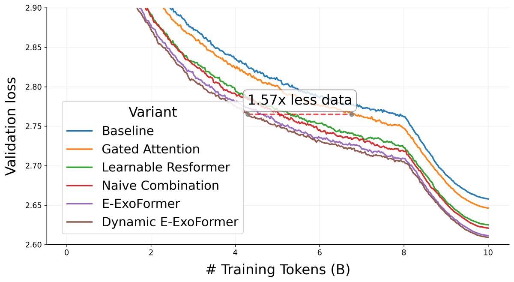
研究表明token级信息会在更深层稀释，一种与over-smoothing相关的现象。这激发了对更直接机制的兴趣以保留早期表示。
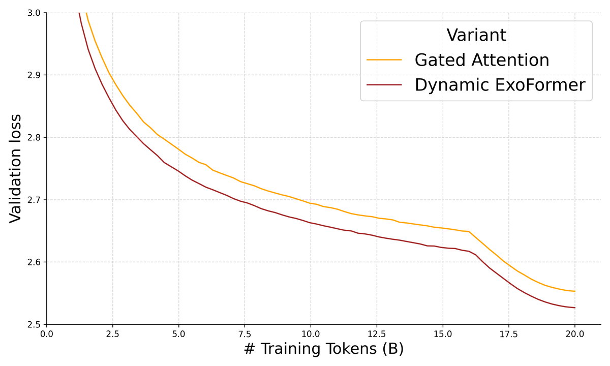
然而现有方案大多孤立运作，留下关键问题未答。ResFormer只关注residualize *values*，留下其他attention组件（queries、keys、gating logits）的复用未探索。
我们引入跨所有attention路径的跨层混合统一框架，系统评估混合queries（Q）、keys（K）、gating logits（G）以及已确立的value（V）residual的贡献，用不同系数粒度（elementwise、headwise、scalar）。关键洞察：混合前对residual源应用RMSNorm解决分布不匹配，实现稳定有益的复用。
分析复用第一层投影的架构揭示根本张力。第一层被迫扮演两角色：(1) 所有更深层的稳定可复用锚点；(2) 渐进特征变换的有效计算块。这一双目标本质限制两角色的效力。
我们的主要贡献是ExoFormer，在顺序层栈之外学习一组*专用外生锚定投影*。internal-anchor版本称NuResFormer（归一化统一），作对比基础。解耦两角色被证明持续有益：每个ExoFormer变体在困惑度上超过对应NuResFormer，下游准确率保持竞争力，宽度深度无增。我们经Offloading Hypothesis解释高性能：外部锚承担保留token身份的角色，让顺序层几乎专精于精炼。此外，锚定稍深表示可进一步改善困惑度同时提高吞吐。
Value Residuals and Gated Attention。ResFormer引入 *Value Residual Learning*：从第一层value projection（V1）到后续所有层的residual connection（标量系数 λ1、λ2调节）。这个简单有效的方法大幅改善性能和数 据效率。但初步尝试residualize queries和keys不稳定。同时gated attention机制为attention输出引入动态输入相关调制。我们的工作把所有attention路径的residual learning泛化，并经归一化混合稳定，桥接residual connection与gated attention。
跨层通信与residual mixing。Hyper-Connections扩展residual stream宽度；Manifold-Constrained Hyper-Connections（mHC）恢复hyper-connected架构的identity-like信号保持性质。
最接近我们（方向正交）的是MUDDFormer：提出Multiway Dynamic Dense（MUDD）connections，把每个Transformer块的输入解耦成四流（query、key、value、residual），用小MLP生成上下文特定权重动态聚合*所有*先前层输出。它主要处理attention投影的*输入*；我们的框架聚焦*混合*投影本身：投影*之后*的混合vs MUDDFormer投影*之前*的输入增强。两者可共存。
第一层复用、KV效率、低秩跨层结构。SkipV1Former用第一层heads替换每层一半Value heads，KV cache省约25% 同时改善困惑度。YOCO缓存一次全局KV pairs并经cross-attention复用。从参数效率角度，inter-layer activation residuals是低秩的，可经跨层低秩差异减少可训练参数。这些与我们的方法互补但不同：ExoFormer经*解耦*锚与顺序栈解决第一层张力，在全秩投影空间运作，跨*所有* attention路径启用可学习归一化混合。
记号。对第n层，Hn-1∈R^(T×d_model) 是输入隐藏状态（pre-normalization后），T是序列长，d_model是模型宽。h个attention heads、每头维度d_k，d_model = h·d_k。投影queries、keys、values、gate logits记为Qn、Kn、Vn、Gn。RMSNorm(·) 表示对每个attention head独立应用的per-token RMS归一化（带可学习gain）。
三种系数粒度。Scalar（S）：所有通道共享单系数；Headwise（H）：每头一系数广播过d_k；Elementwise（E）：每通道一系数。Elementwise和headwise对复用机制提供细粒度控制。
MHA三阶段。阶段1：QKV线性投影Qn=Hn-1·WnQ、Kn=Hn-1·WnK、Vn=Hn-1·WnV（含RoPE和QKNorm）。阶段2：缩放点积注意力An=softmax(QnKn^T/√d_k)、Un=An·Vn。阶段3：输出投影On=Un·WnO。NuResFormer/ExoFormer中这些阶段用式(10)的混合张量。
Gated Attention。对拼接多头输出应用elementwise头特定乘法门控：Ũn = Un ⊙ σ(Gn)，On = Ũn·WnO，其中Gn=Hn-1·WnG。注意：消融显示post-norm而非pre-norm会大幅降低gated attention性能。
统一混合。每层attention路径用一组持久 *anchor projections* {Qanc,Kanc,Vanc,Ganc} 经可学习混合跨所有层复用。当前层投影照常计算。锚定投影两种实例化：NuResFormer：锚是第一个attention层的投影（Qanc=Q1等）；ExoFormer：锚由输入embedding上的专用外部投影模块产生（Qanc=H0·WancQ等，独立可学习权重矩阵）。
归一化源混合。对每个组件S∈{Q,K,V,G}：Ŝn = λn,1S ⊙ RMSNorm(Sanc) + λn,2S ⊙ Sn。λ 系数张量按所选粒度（scalar/headwise/elementwise），全部初始化为0.5、可学习。
第一层张力和ExoFormer。跨层residual复用让早期信息每深度可用，但隐式迫使第一层满足两压力：可复用锚点（产生整深度有价值的广用参考表示）和渐进计算（产生易被下游变换的特征）。理论上可共存（可选路径由 λ 调制），但结构约束给第一层妥协压力，本质限制两角色。经验支持：NuResFormer第一层相对标准baseline采用宽松gating策略。ExoFormer用式(9)的专用外生投影实例化框架。
Dynamic Mixing模块。受MUDDFormer Depth-wise Aggregate启发：可学习参数被层输入Hn-1经小MLP计算的上下文相关缩放因子调制。每层MLP：DMn(Hn-1) = σ(GELU(Hn-1·Wn,1DM)·Wn,2DM + bnDM)，输出维8对应 {γn,1Q,γn,2Q,γn,1K,γn,2K,γn,1V,γn,2V,γn,1G,γn,2G}。输出层零初始化保证初始sigmoid输出0.5，所以base λ 初始化为1.0达有效identity mixing。调制混合：Ŝn = (λn,1S·γn,1S) ⊙ RMSNorm(Sanc) + (λn,2S·γn,2S) ⊙ Sn。
训练细节。所有模型用现代pre-normalized Transformer架构：SwiGLU激活、QKNorm、RoPE。遵循prior work：projection和classification层零初始化、移除bias（除DM模块）、z-loss正则、无dropout。FineWeb-Edu数据集训练：约450M参数模型10B token，约1B参数模型20B token。
优化。矩阵参数用Muon（Polar Express变体）+ cautious weight decay 0.1；1D参数用Adam。梯度范数clip 1.0，所有模型同一优化设置公平比较。全局batch 262,144 token、序列长2,048。
评估。每基准示例5-shot prompt，长度归一化准确率。困惑度在含1亿token的FineWeb-Edu验证集上测。6个多选题基准：arc_challenge、arc_easy、hellaswag、openbookqa、piqa、winogrande。单张NVIDIA H100 80GB、原生BF16、FlashAttention。
主结果（约450M / 10B token）：Dynamic E-ExoFormer最优平均准确率50.27%、PPL 14.09；静态E-ExoFormer平均49.85%、PPL 14.13。所有ExoFormer变体在PPL上超过对应NuResFormer。
完整结果表：
| Model | ARC-c | ARC-e | Hella. | OBQA | PIQA | Wino. | Avg Acc | PPL |
|---|---|---|---|---|---|---|---|---|
| Base Transformer | 30.97 | 63.38 | 42.02 | 33.60 | 67.30 | 51.54 | 48.14 | 14.79 |
| Gated Attention | 30.89 | 64.69 | 42.73 | 34.00 | 67.14 | 53.35 | 48.80 | 14.64 |
| ResFormer (Value Residual) | 33.62 | 64.86 | 43.49 | 34.40 | 68.88 | 52.64 | 49.65 | 14.32 |
| Naive Combination | 32.94 | 64.52 | 43.47 | 32.60 | 68.34 | 52.64 | 49.09 | 14.25 |
| E-NuResFormer (Only Q/K Norms) | 31.74 | 64.27 | 43.83 | 33.00 | 68.23 | 52.41 | 48.91 | 14.21 |
| H-NuResFormer (Only Q/K Norms) | 34.73 | 64.06 | 44.45 | 34.20 | 67.57 | 53.04 | 49.68 | 14.21 |
| S-NuResFormer (Only Q/K Norms) | 32.85 | 66.08 | 43.87 | 34.20 | 68.28 | 53.67 | 49.83 | 14.22 |
| E-NuResFormer | 33.70 | 65.07 | 44.23 | 33.60 | 68.34 | 53.12 | 49.68 | 14.15 |
| H-NuResFormer | 33.79 | 65.11 | 44.09 | 33.40 | 67.41 | 52.72 | 49.42 | 14.17 |
| S-NuResFormer | 32.42 | 64.02 | 43.93 | 33.20 | 67.90 | 53.20 | 49.11 | 14.17 |
| E-ExoFormer (No Norm) | 32.08 | 63.76 | 43.49 | 34.40 | 68.77 | 55.64 | 49.69 | 14.30 |
| Dynamic E-ExoFormer | 33.36 | 65.87 | 44.54 | 34.40 | 68.28 | 55.17 | 50.27 | 14.09 |
| E-ExoFormer | 32.42 | 64.65 | 44.28 | 36.40 | 67.74 | 53.59 | 49.85 | 14.13 |
| H-ExoFormer | 32.17 | 65.87 | 44.00 | 32.40 | 68.23 | 52.72 | 49.23 | 14.14 |
| S-ExoFormer | 32.17 | 65.66 | 44.33 | 33.60 | 68.06 | 51.14 | 49.16 | 14.15 |
RMSNorm两个角色：作为scale-dependent有理函数，给原本线性的residual路径引入非线性变换；作为温和的isotropization算子，独立归一化每个token表示跨heads，把向量重缩放到单位RMS，保留方向信息、移除per-token尺度差异。这个per-token操作保留维度间相对对齐，编码语义和句法特征。
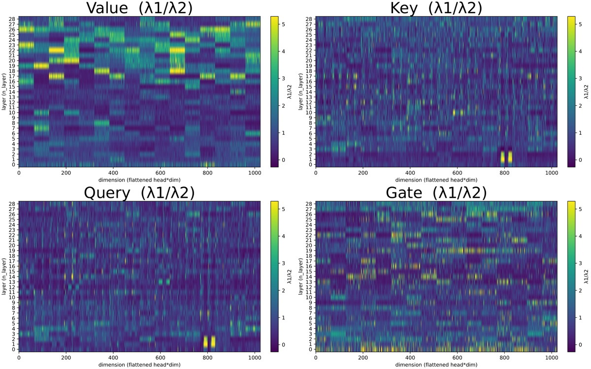
对anchor源应用RMSNorm的必要性被无归一化模型学习到的混合系数分析经验支持。例如无residual归一化的ExoFormer变体，λ1（anchor信号强度）近零系数（<0.001）比例约为归一化变体的三倍。这个对 anchor 路径的抑制表明模型在主动补偿分布不匹配。
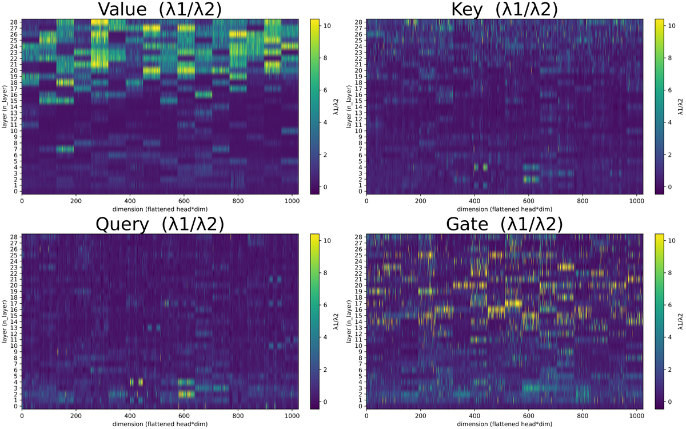
我们假设naive combination表现差因为无归一化混合引入anchor与当前层投影的分布不匹配，迫使gating机制把容量从选择性过滤转向补偿性尺度校正。σ(G) 必须补偿不匹配而非执行意图的过滤角色，导致训练不稳定和比单独ResFormer更差的下游准确率。梯度诊断量化：naive combination梯度spike score 0.0108，高于Gated Attention（0.0085）、两倍于E-ExoFormer（0.0054）。
无归一化Q/K residual的不稳定性与QKNorm的稳定作用。与先前观察一致，稳定性有清晰层级。无QKNorm用无归一化Q/K residuals的模型难优化，初步运行显示发散loss。关键地，仅加QKNorm就稳定训练并恢复baseline性能。我们假设因为QKNorm压缩Q和K的尺度，缓解把早期层routing信号注入更深层时出现的分布不匹配。此外，QKNorm之上对Q/K anchor源加显式RMSNorm给出最好结果，启用正复用。
Gating logit混合天然更稳定。与Q和K相反，gating logits G的residual connection无需归一化即可直接加入。我们假设被sigmoid压缩的gate logits天然对分布不匹配较不敏感。
NuResFormer的粒度。scalar混合达到最高平均下游准确率（49.83%）参数最少；headwise几乎持平（49.68%→49.42%），表明每attention头一个自由度捕捉大部分有益结构；elementwise给最好语言建模困惑度（14.15）但下游略低：增加的参数自由度改善分布内loss但泛化不一定更好。
ExoFormer的粒度。Elementwise混合（E-ExoFormer）整体最优：静态模型最高平均准确率49.85%、最低验证困惑度14.13。这个反转表明系数粒度有效性是架构相关的：在更干净设置（因解耦），优化器能有效利用细粒度混合编排精确复用策略而不损泛化。
elementwise混合中的涌现头结构。学习到的elementwise系数可视化揭示每attention组件特定模式：value路径热图有*与头块精确对齐的sharp边界*：尽管优化器可自由独立设每通道，结构涌现，与heads作为路由信息专用子模块的研究一致。相反，queries、keys、gate logits展示*更细粒度、intra-head结构*（如交替的高/低复用带「striping」），提示sub-head特化。Q的高/低带位置常与K对齐。
Dynamic Mixing的灵活性。动态变体中Q/K/G的 λn,1/λn,2跨通道层更均匀分布。模型不收敛到固定层特定复用策略，而是能基于输入序列实时调制每组件的anchor路径强度，给混合系数本身更多表达自由。
Baseline Transformer行为与Mix-Compress-Refine理论一致：(1) 高attention entropy阶段作token信息的广上下文整合；(2) 过渡到以主导attention sinks和core features剧降为标志的压缩谷，停止混合并降低表示维度过滤无用信息；(3) 以attention entropy骤升收尾（sinks消散），启用生成所需的精炼token特定处理。
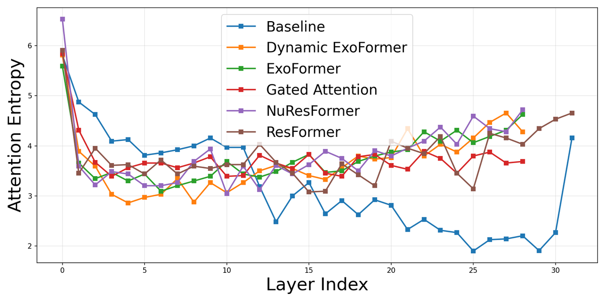
这三个阶段在标准Transformer自然涌现，但非为计算效率优化。模型花计算能力坍缩上下文信息，随后又重建：标准架构的低效。
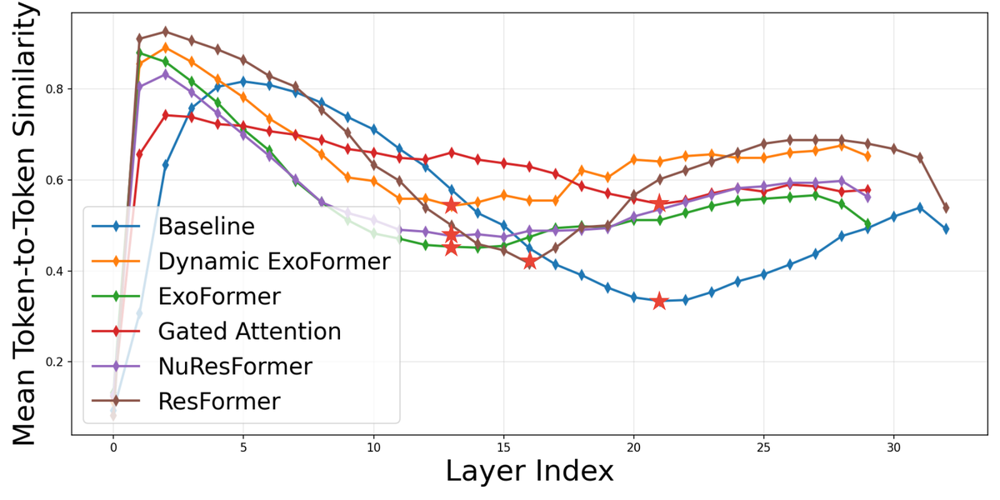
Gated Attention和residual mixing经瞄准阶段2改善性能。基于经验模式，gated attention和residual mixing的收益部分源自对第二阶段（压缩）的影响。
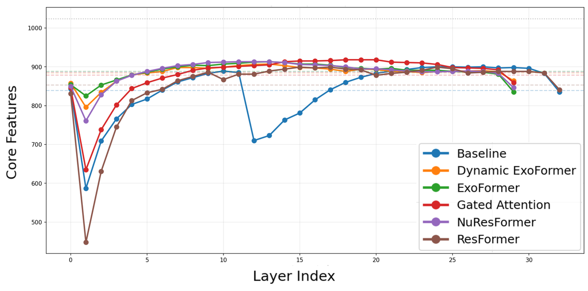
gating机制解决模型过滤无关上下文的需求（阶段2核心功能）。引入每层选择性调制信息流的输入相关稀疏性，gated attention提供分布式过滤形式，可能减少或消除以主导attention sinks为标志的尖锐专用压缩阶段需求。经验证据一致：有gating的模型无清晰压缩谷，attention sink幅度相对baseline剧减。
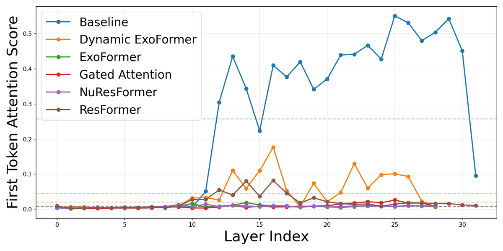
同样，residual mixing模型里residual路径提供abrupt sink过滤的隐式学习替代。学习到的混合减少模型对极端sink驱动压缩的依赖以隔离有用信号。两者都缓解阶段2的abrupt信息瓶颈，用更连续、学习到的过程替代低效sink过滤。
ExoFormer的架构解耦启用有趣的功能特化，我们形式化为Offloading Hypothesis：通过提供专用、高保真的token身份源，外生锚允许顺序层卸载保留静态特征的重担，几乎专精于Mix-Compress-Refine循环的最终「精炼」阶段（Stage 3）。
特化证据清晰可见于token-similarity轨迹：所有模型展示特征模式：similarity升到早期最大（Stage 1混合）、跌到局部最小（Stage 2压缩）、再升、最后一层落（Stage 3精炼）。关键地，ExoFormer变体和NuResFormer约2/3层花在这个特化精炼阶段，任何模型最高比例；baseline只1/3。
这个特化可能因为外生锚根本性重配Transformer内信息管理。标准架构里residual stream必须并发携带两类冲突信息：(1) 保留token身份的独特静态特征（「我是什么token？」）；(2) 经层演进支持next-token预测的变换后任务相关特征。标准模型的over-smoothing灾难性丢失第一类，削弱模型有效路由信息的能力。ExoFormer引入每层再注入的持久外部锚，绕开张力，保证高保真token身份可达。
锚专精「身份保持」。专用锚参数（WancQ/WancK/WancV/WancG）可专精于最大化方差和独特性，优化作通用参考。
顺序层专精「渐进计算」。身份信息外部供给后，内部层从保留早期层几何的约束解耦，不再需要在residual stream内维护稳定高保真token身份记录。卸下保留静态token特征的重担，层能更高效分配容量学习复杂高层模式，带来困惑度和下游准确率双改善。
受控消融强化因果解释。做两类受控推理时干预。第一，anchor-removal消融（λn,1=0）：NuResFormer崩溃比ExoFormer更灾难性：最终层PCA core features骤跌到仅181维（ExoFormer 321），token相似度峰更高。这个不对称直接支持First-Layer Tension假设：NuResFormer强迫第一层既当计算块又当可复用锚，结果internal anchor移除时本质更脆。
第二，inverse ablation（λn,2=0，只靠锚）：ExoFormer跨层平均保留822 PCA core features，NuResFormer只611。确认外生锚提供比妥协的internal anchor显著更高保真的身份信号。
Table 4消融数据：
| Model | Ablation | Final Layer PCA | Avg. Layer PCA |
|---|---|---|---|
| ExoFormer | Anchor Removed (λn,1=0) | 321 | 756 |
| NuResFormer | Anchor Removed (λn,1=0) | 181 | 685 |
| ExoFormer | Inverse (λn,2=0) | 916 | 822 |
| NuResFormer | Inverse (λn,2=0) | 577 | 611 |
因为外生锚与顺序层栈解耦，其源表示不必限于输入embedding H0。我们调查锚定稍深表示H1或H2是否改善性能。
出乎意料地，锚定H1给出最好结果（PPL 14.02），超过H0锚（14.09）和H2锚（14.09）。用H1锚的静态ExoFormer也超过dynamic H0 baseline（14.07 vs 14.09）。
这与Value Residual Learning（ResFormer）对比鲜明：它发现最早表示（H0）最优。我们把差异归因于锚的*外生*性质：因为锚模块与顺序层栈解耦，它能有效利用H1更丰富的语义信号，不受internal-anchor设计固有的第一层张力之苦。
我们假设H1提供最优「有效锚深度」：保留核心token身份同时提供略多处理的特征。H2不再改善，提示饱和点：超过它锚丢失offloading机制所需的高保真身份信号。除困惑度收益，H1和H2锚还通过减少混合开销改善吞吐。
| Model | Anchor Source | Val. PPL |
|---|---|---|
| Dynamic | H0 (input embeddings) | 14.09 |
| Dynamic | H1 (layer 1) | 14.02 |
| Dynamic | H2 (layer 2) | 14.09 |
| Static | H0 (input embeddings) | 14.13 |
| Static | H1 (layer 1) | 14.07 |
参数开销。Baseline（Gated Attention）每层参数：attention投影（Q/K/V/G/输出）5d² + FFN 6d² = 11d²，总P_base = 11Ld²。ExoFormer引入外生锚4个d×d矩阵（ΔP_anchor = 4d²）。静态混合每层8d参数（ΔP_static = L·8d）。Dynamic Mixing模块每层加MLP（ΔP_DM ≈ L·d·d_DM，d_DM=16、d_out=8）。
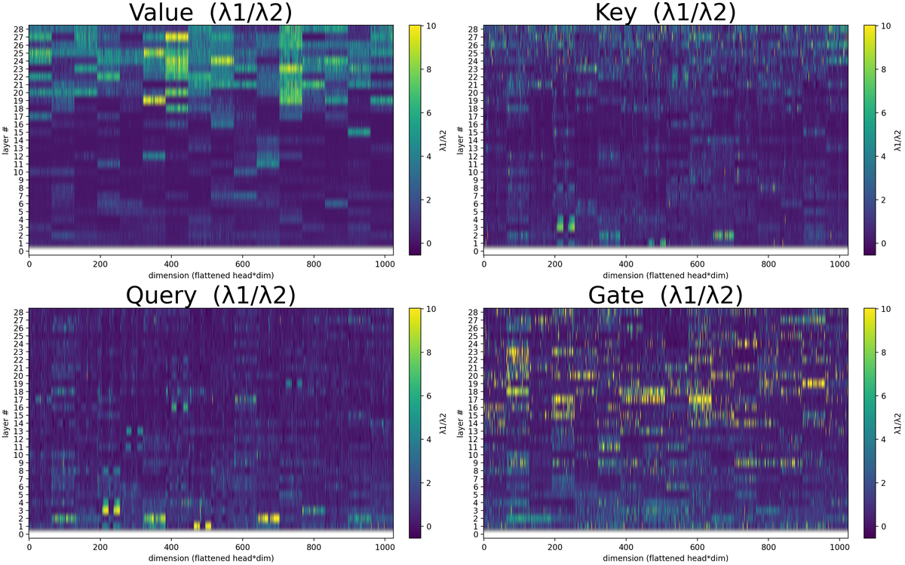
静态ExoFormer总开销 ΔP = 4d² + 8Ld；动态另加L·d·d_DM。相对baseline比例：R_P(static) = 4/(11L) + 8/(11d)，R_P(dynamic) = 4/(11L) + (8+d_DM)/(11d)。对L=32、d=1024、d_DM=16，约静态1.2%、动态1.3% 开销。
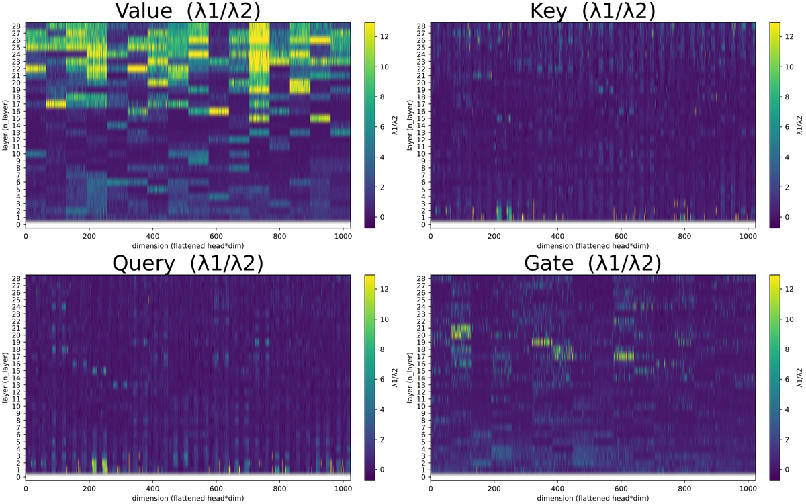
虽然原始参数数看似可忽略，它们低估锚模块的有效容量贡献：外生参数结构上被特权：经混合框架每层复用。ExoFormer用最小可训练参数增加（约1.3%）换取有效容量显著增益，专精一个模块于身份保持。这比简单加宽hidden dimension更参数高效（那会无差别跨所有层分配额外容量）。
计算开销（FLOPs）。外生锚投影每token只算一次（输入embedding上），不随深度L缩放：ΔC_anchor ≈ 8d²。DM模块每层：L·(2·d·d_DM + 12d)。总FLOPs比例R_FLOPs = 8/(22L) + d_DM/(11d) + 6/(11d)。对L=32、d=1024、d_DM=16：锚投影约1.1%、DM投影约0.14%、elementwise混合约0.05%，总约1.33% FLOPs增加。
效率-性能权衡。FLOPs分析是计算开销下界。实际延迟增加约8-15%（参考实现优先模块化和可解释性而非速度）。我们强调主要贡献是统一attention投影混合的新架构，非生产优化层。即使计运行时开销，净性能收益仍为正（准确率 +1.5点、数据效率1.5×），优化kernel会收敛到理论1.3% 开销。
替代归一化位置。从E-ExoFormer（全residual norms）baseline出发，加post-mixing归一化：QKV-Norm（对V̂n应用）PPL 14.08；QKVG-Norm（对四个混合张量都应用）14.07。收益边际（0.05-0.06），说明注入*前*归一化anchor源捕捉了绝大多数稳定化收益，额外post-mixing归一化收益递减。
梯度稳定性。定义spike score为梯度L2范数超过去1,000步滚动均值七个标准差的比例。更高分数 = 更严重梯度瞬变、更不稳定优化。
ResFormer最高spike score（0.0458），确认无归一化value residuals引入严重梯度不稳定。Naive combination部分缓解（0.0108）但仍高于单独Gated Attention，与假设一致（σ(G) 被从过滤角色转移去补偿分布不匹配）。E-ExoFormer最低（0.0054），证明把锚从第一层解耦消除了作为独立梯度不稳定源的架构张力。
超参数（约450M模型）。Layers 32（gated 29）、Hidden 1024、FFN 4096、Heads 16、Vocab 57,601、SwiGLU、RoPE（θ=500,000）、Seq 2048、Batch 262,144 token、10B token、Muon + Adam、Muon LR 0.01 / Adam LR 0.003、Gradient Clip 1.0、Cautious WD True、Muon WD 0.1、Z Loss 1e-5、QKNorm True。
1B模型：Hidden 1536、FFN 6144、20B token、Muon LR 0.003 / Adam LR 0.001、总步76,293。
梯度稳定性表：
| Model | Spike Score (%) |
|---|---|
| ResFormer (Value Residual, unnormalized) | 0.0458 |
| Naive Combination (Gated + ResFormer, unnormalized) | 0.0108 |
| Gated Attention | 0.0085 |
| E-NuResFormer (full residual norms) | 0.0081 |
| E-ExoFormer (full residual norms) | 0.0054 |
我们引入ExoFormer，一种通过学习专用外生锚定投影把token身份保持与计算精炼解耦的新Transformer架构。通过跨queries、keys、values、gates的统一归一化混合框架，ExoFormer解决复用第一层投影固有的架构张力。
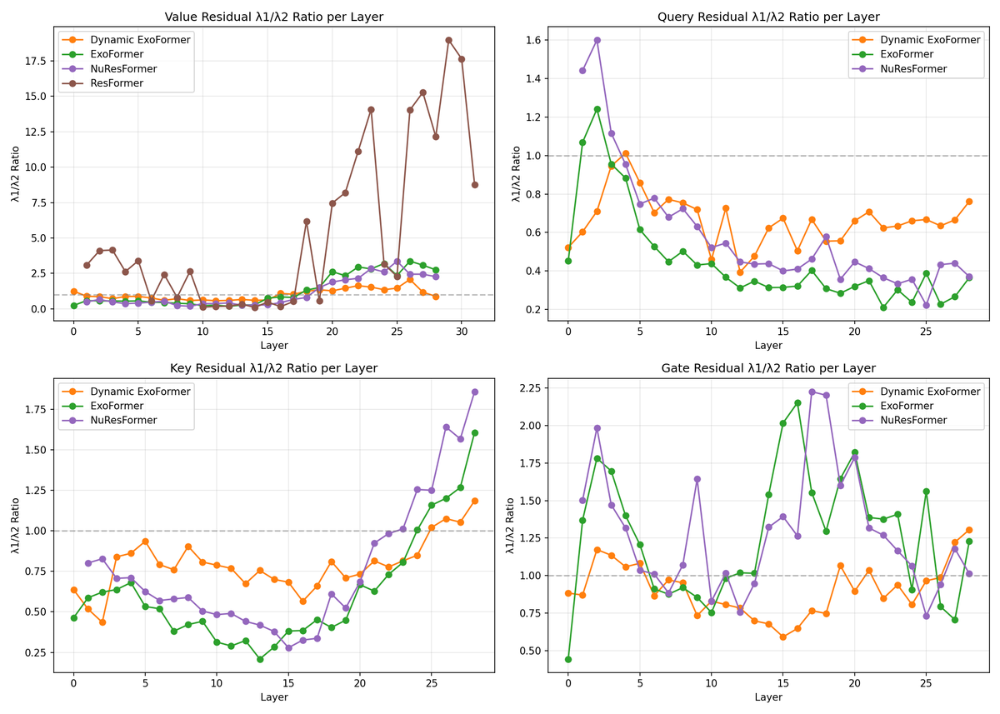
实验证明这个解耦持续改善性能，dynamic变体相对标准gated attention baseline在下游准确率和数据效率取得显著增益。这些结果验证Offloading Hypothesis：外部化身份保持让顺序层专精于高层特征变换，为增强大语言模型提供高效架构路径。
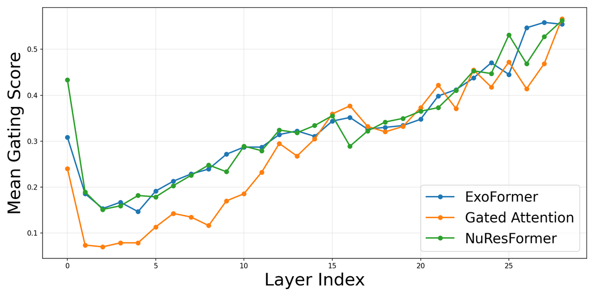
影响声明。主要正面社会影响是环境可持续性：减少训练高性能模型所需token数，直接应对LLM训练不断上升的能耗和碳足迹。开源发布促进民主化，降低研究和中小组织开发和部署SOTA NLP工具的计算障碍。Offloading Hypothesis提供信息如何流经深网的理论框架，助益LLM的可解释性和机制理解。
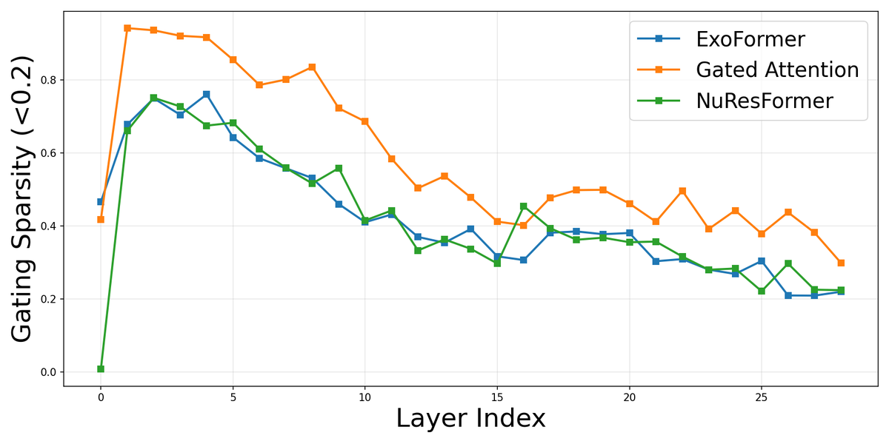
虽然贡献是架构性的（聚焦效率和结构），它促进更有能力AI系统的部署，可能被恶意利用。此外消融提示鲁棒性，但「offloading」机制扩展到显著更大参数（如100B+）存在固有不确定性，可能引入450M-1B范围未观察的新失败模式或安全挑战。
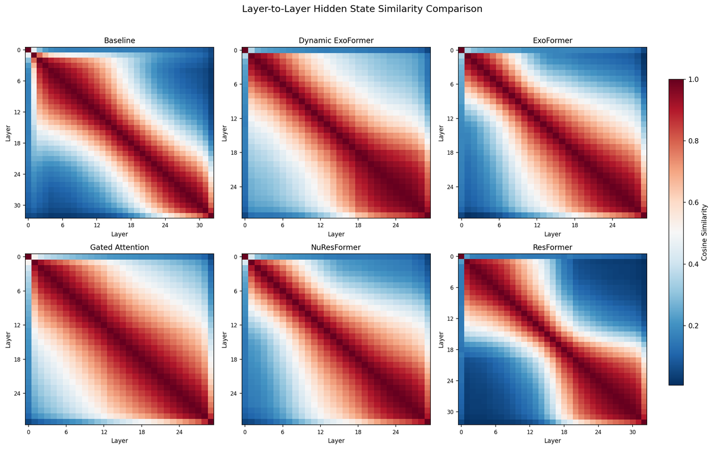
参考：https://arxiv.org/html/2601.08131v4